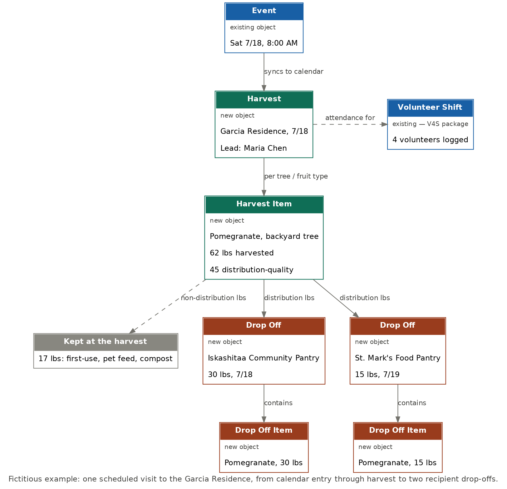

Current State
Less to build than expected
Iskashitaa's Salesforce org (Classic NPSP on Sales Cloud, installed 2014) already has more relevant infrastructure than "basic contact management." A June 2026 audit of the live org — Object Manager, Account and Contact fields, installed packages, and Flows — found three things already in place that earlier planning assumed would need to be built from scratch.
Volunteer tracking is already installed
Volunteers for Salesforce (V4S) is active. Volunteer Job, Volunteer Shift, and Volunteer Hours objects already exist, with rollup fields on Contact for hours and first/last volunteer date. This covers most of what a from-scratch "attendance" object would have had to do.
Volunteer & Driver fields already exist on Contact
A Refugee__c flag, a waiver checkbox, and an orientation-date field are already on Contact — close to what Step 1 entry needs. Driver vetting fields (license, background check, insurance) already exist too.
Account has zero gleaning customization
Every Account field today is standard or part of NPSP's donor tooling. Existing Record Types — Commercial Partner, Household Account, Organization — cover IskaShop and donor management, but none represent "a physical site with trees."
Why this matters for the board: the volunteer-side data model — the part of this project closest to people and liability (waivers, background checks, hours) — is largely already built and in use. The build effort concentrates on the gleaning-specific objects (Tree, Harvest, Drop Off) that simply don't exist yet, not on rebuilding infrastructure that's already working.
The Gap
What needs to be added
Six new objects, organized so the harvesting side (Tree → Harvest → Harvest Item) and the distribution side (Drop Off → Drop Off Item) share only Fruit Type between them — matching the data model on the Framework page.
| New object | What it's for |
|---|---|
| Fruit Type ("Crop") | Shared lookup table — fruit name, variety, season, typical yield range. Build first; everything else depends on it. |
| Tree | One record per tree on a property: fruit type, location, ladder required, estimated yield, and estimated yield remaining — the field that closes the capture-rate gap named on the Framework page. |
| Harvest ("Glean") | One record per harvest event: property, date, Harvest Lead, status, total lbs, distribution destination. Links to V4S's existing Volunteer Shift for attendance, rather than duplicating it. |
| Harvest Item ("Glean Item") | Per-tree results within a harvest: lbs by quality tier — distribution-quality, first-use, pet/animal feed, compost. The four-tier breakdown is built in from day one, closing the wiki's known quality-tier gap. |
| Drop Off | One record per distribution event: date, recipient organization, total lbs, distribution type. |
| Drop Off Item | Per-fruit-type detail within a Drop Off. |
Existing objects — fields to add
| Object | Add | Why |
|---|---|---|
| Account | Access notes; preferred contact method; a new Property Record Type | Needed for the Harvest Lead's on-site reference and the homeowner outreach in the Case for Change. |
| Contact | Progression Step (Steps 1–11) | The single clearest gap — nothing tracking a volunteer's current step exists today. This is also the open item flagged in Onboarding. |
| Event (standard) | Related Harvest lookup | Supports a lightweight calendar view of harvests without duplicating data — see below. |
Why a custom Harvest object, not a calendar Event
Salesforce's standard Event object was considered as a simpler alternative to a custom Harvest object, since it comes with built-in calendar UI and free Outlook/Google sync. It doesn't hold up under the reporting this project is built around: Event can't be the master side of the roll-up that auto-totals a harvest's pounds from its Harvest Items, and Event's invitee list can't track hours or assigned role the way V4S's Volunteer Shift already does. The recommendation is to keep Harvest as its own object — for clean roll-ups and full reporting — and have it automatically generate a lightweight linked Event purely so staff have a shared calendar view. This is the same pattern V4S itself uses for Volunteer Shift, for the same reason.
A Worked Example
How one harvest flows through the model

Getting Field Data In
From a paper sheet to a Salesforce record
Today, Harvest Leads record data on paper and someone re-keys it afterward. That doesn't scale as harvest volume grows, and most field volunteers shouldn't need a Salesforce login. Four options were evaluated for closing that gap.
| Option | Volunteer needs a login? | Same-day capture? | Build effort |
|---|---|---|---|
| 1. Coordinator-operated entry form | No | No — depends on paper relay | None beyond the entry form itself |
| 2. Bulk spreadsheet import | No | No | None — native Salesforce tool |
| 3. Public mobile form, no login | No | Yes | One-time setup; no per-volunteer cost |
| 4. iskashitaa-dev app integration | No | Yes | New form + API integration; separate codebase to maintain |
Recommendation: start with Option 1 — it requires nothing beyond the data-entry form already being designed for Harvest Leads, and a coordinator can run it from the office using existing paper sheets. Layer in Option 2 for any harvest with high paper volume. Treat Option 3 as the real long-term fix: once the entry form is built and working for a coordinator, exposing the same form on a public, no-login mobile page is an incremental step — not a rebuild — and it's what actually removes the scaling ceiling as volunteer count grows. Option 4 stays available later if a dedicated branded app ever matters more than staying inside Salesforce, but isn't worth building before Option 3 has been tried.
Licensing note: nonprofits receive 10 free Salesforce licenses through the Power of Us program — a coordinator seat comes out of that existing, no-cost pool. Option 3's public form requires no per-volunteer license at all.
Sequencing
Suggested build order
Each step only depends on objects that already exist by the time it's built:
Fruit Type
Shared lookup table — build first since Tree and Harvest Item both depend on it.
Tree
Linked to Property and Fruit Type.
Harvest
Linked to Property, Harvest Lead, and V4S's existing Volunteer Shift.
Harvest Item
Linked to Harvest, Tree, and Fruit Type — including the four-tier quality breakdown.
Account updates
Access notes, preferred contact method, new Property Record Type.
Contact: Progression Step
Closes the onboarding-tracking gap.
Drop Off & Drop Off Item
Distribution side of the model.
Automation
Post-harvest thank-you email; Harvest Calendar sync to a linked Event.
Open Questions
Decisions still needed before building
- Does "Property" need its own Record Type, or can homeowner properties just be their existing Household Account with property fields added? Matters mainly if a homeowner could have multiple properties, or vice versa.
- Is the existing "Organization" type good enough for recipient orgs, or does Recipient Org need to be its own Record Type with a distinct layout?
- Reuse V4S, or build a from-scratch attendance object? This audit recommends reusing V4S since it's already installed and wired to Contact — the trade-off is that some of its screens use generic volunteer-org language rather than harvest-specific terms.
- How much does same-day field capture matter right now? If paper sitting for a few days before entry isn't currently causing problems, Option 3 above can reasonably wait.
Source: Salesforce_Field_Gap_Audit.md and Data_Capture_Strategy_Paper_to_Salesforce.md, Iskashitaa Salesforce inspection & implementation working files, audited 2026-06-22.